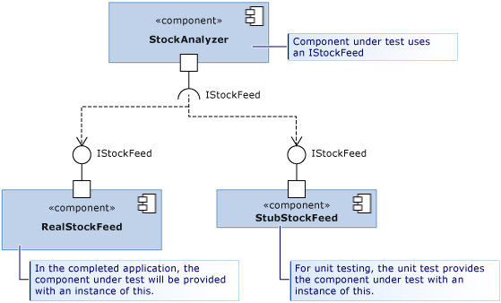

stubs
Overview [Documentation]
A stub is a small piece of code that replaces another component during testing.
Using stubs effectively requires application design such that each component depends only on interfaces, not other components:

Example: Creating and Using Stubs
-
Create an interface:
// IStockFeed.cs public interface IStockFeed { int GetSharePrice(string company); } -
Create a class that uses the interface:
// StockAnalyzer.cs public class StockAnalyzer { private IStockFeed stockFeed; public StockAnalyzer(IStockFeed feed) { stockFeed = feed; } public int GetContosoPrice() { return stockFeed.GetSharePrice("COOO"); } } -
Create a test project.
-
From the test project, add a project reference to StockAnalyzer.
-
Add a Fakes Assembly:
- Solution Explorer > TestProject > [Assemblies, Projects or Packages]
- Right-click the assembly that contains class definitions to be stubbed > Add Fakes Assembly
-
Create a unit test.
-
Modify the default
UnitTest1.csfile with this test method:[TestClass] class UnitTest1 { [TestMethod] public void TestContosoPrice() { // Arrange: int priceToReturn = 345; string companyCodeUsed = ""; var componentUnderTest = new StockAnalyzer(new StockAnalysis.Fakes.StubIStockFeed() { GetSharePriceString = (company) => { companyCodeUsed = company; // Store the parameter value return priceToReturn; // Return the value prescribed by this test } }); // Act: int actualResult = componentUnderTest.GetContosoPrice(); // Assert: // Verify the correct result in the usual way: Assert.AreEqual(priceToReturn, actualResult); // Verify that the component made the correct call: Assert.AreEqual("COOO", companyCodeUsed); } }For every interface in the referenced assembly, Microsoft Fakes generates a stub class. The name of the stub class is derived from the name of the interface with
Fakes.Stubas a prefix. Stubs are generated for getters/setters, events, and generic methods. -
Run the test.
.fakes file that fixes this:
<Fakes xmlns="http://schemas.microsoft.com/fakes/2011/">
<Assembly Name="EdrApi"/>
<StubGeneration>
<Clear />
<Add FullName="EdrApi.!" />
</StubGeneration>
</Fakes>
Stub Behavior
Each generated stub type receives an IStubBehavior through the IStub.InstanceBehavior property. Whenever a client calls a member
with no attached custom delegate, this behavior is invoked. If no behavior has been set, it uses StubBehaviors.Current which throws
a NotImplementedException by default.
This example changes the behavior so that the stub either does nothing or returns the default value of the return type:
// unit test code
var stub = new StockAnalysis.Fakes.StubIStockFeed();
stub.InstanceBehavior = StubsBehaviors.DefaultValue; // return default(T) or do nothing
To change the behavior globally for all stubs where behavior has not been set, use StubBehaviors.Current:
// unit test code
StubBehaviors.Current = BehavedBehaviors.DefaultValue;
Stubbing Different Members
Stubs of Methods
Consider this interface with a method:
// IStockFeed.cs
interface IStockFeed
{
int GetSharePrice(string company);
}
Methods can be stubbed by attaching a delegate to an instance of the stub type. The name of the stub type is derived from
the names of method properties and parameters. The GetSharePrice method has a stub type of GetSharePriceString:
// unit test code
int priceToReturn = 345;
string companyCodeUsed = "";
var componentUnderTest = new StockAnalyzer(
new StockAnalysis.Fakes.StubIStockFeed()
{
GetSharePriceString = (company) =>
{
companyCodeUsed = company; // Store the parameter value
return priceToReturn; // Return the value prescribed by this test
}
});
If a stub for a method is not provided, Fakes generates a method that returns the default value of the return type.
Stubs of Generic Methods
Stub generic methods by providing a delegate for each desired instantiation:
interface IGenericMethod
{
T GetValue<T>();
}
To stub GetValue
[TestMethod]
public void TestGetValue()
{
var stub = new StubIGenericMethod();
stub.GetValueOf1<int>(() => 5);
IGenericMethod target = stub;
Assert.AreEqual(5, target.GetValue<int>());
}
Stubs of Properties
A property’s getter and setter are exposed as separate delegates and can be stubbed individually:
interface IStockFeedWithProperty
{
int Value { get; set; }
}
// unit test code
int i = 5;
var stub = new StubIStockFeedWithProperty();
stub.ValueGet = () => i;
stub.ValueSet = (value) => i = value;
If a stub for either the getter or setter of a property is not provided, Fakes generates a stub that stores values (making the stub property behave like a simple variable).
Stubs of Events
Events are exposed as delegate fields. Any stubbed event can be raised by invoking the event’s backing field:
interface IStockFeedWithEvents
{
event EventHandler Changed;
}
// unit test code
var withEvents = new StubIStockFeedWithEvents();
withEvents.ChangedEvent(withEvents, EventArgs.Empty); // raises the Changed event
Stubs of Virtual Classes
Stubs can be generated from classes that have abstract or virtual members:
// Base class in application under test
public abstract class MyClass
{
public abstract void DoAbstract(string x);
public virtual int DoVirtual(int n) => n + 42;
public int DoConcrete() => 1;
}
You can then set delegate methods for DoAbstract() and DoVirtual() (but not DoConcrete()):
// unit test
var stub = new Fakes.MyClass();
stub.DoAbstractString = (x) => { Assert.IsTrue(x>0); };
stub.DoVirtualInt32 = (n) => 10 ;
If a delegate of a virtual method is not provided, Fakes can either:
- Provide the default behavior
- Call the method in the base class
For #2:
// unit test code
var stub = new Fakes.MyClass();
stub.CallBase = false;
// No delegate set - default delegate:
Assert.AreEqual(0, stub.DoVirtual(1));
stub.CallBase = true;
// No delegate set - calls the base:
Assert.AreEqual(43,stub.DoVirtual(1));